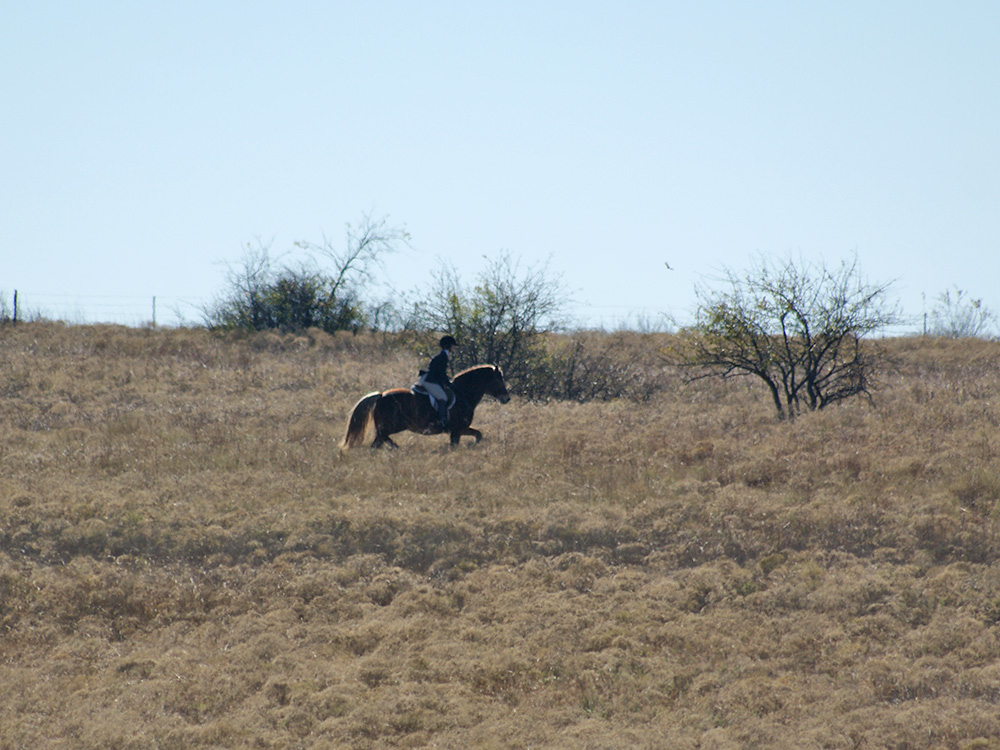

11/19/2016 Simon at Opening Hunt
It was the coldest day so far this year, but the wind had died down,
so the horses were fresh, but not too silly.
Simon was excited coming off the trailer, but saw the familiar
trailers and horses and settled quickly.
He was a lot of fun out with the hunt. We stayed away from the
action and watched from a distance, but raising his head and looking big
were the only signs he was excited when they'd come close.
We had one long trot across a pasture toward the end, and that was the first time
I felt him relax his back and swing in the trot. But, I never felt him tire and
he was always happy to move on to the next location.
He's good for tacking up at the trailer.
Waiting to head out. He was good about standing or walking around with the other horses. We had to be careful
when in the tall grass, but he was very surefooted navigating the rough ground.
Watching for the hunt. He's very aware of his surroundings.
We hung out with Katie and Bella. Bella was so happy to be out and and a bit eager. Simon was good even when Bella cantered or trotted past us when she got
excited. He was good and only cantered when I told him to. Every once in a while he would pick up a trot without my asking, though.
He is starting to learn a relaxed forward walk, but we had no issue with him crowding, because he didn't walk as fast as Bella.
He is still chubby, but he fit in the smaller sized girth for the first time today.
Guarding the South and watching the hounds come around to the pond for water.

Catching up to Bella.
Checking for any stragglers at the water.
We don't ride on a lot of gravel, but I let him pick his way when we do, because he's barefoot.
Working our way through the tall grass he would occasionally grab a bite, but wasn't pushy about it.
I like riding with his mane up so it doesn't get tangled in the double reins. He still doesn't have a halt off the seat and that second set of reins on the curb are my emergency brake. I only used it once this ride when we were coming up to the cattle guard.
Our first gate opening and closing was slow going, but by the last one he was presenting his left or right side to the fenceline and standing still while we worked out the chains and latches. I love a horse who's calm while getting a gate.